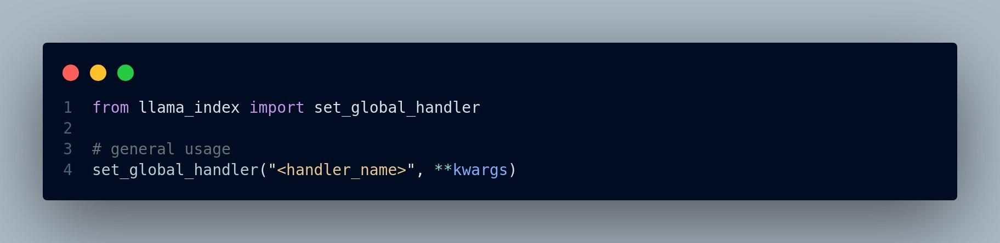
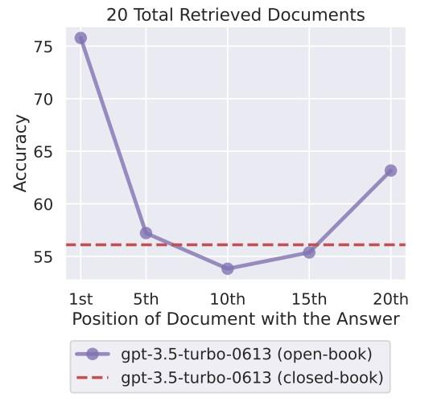

08
[Part 2____________________________________________________________________]{.underline}
We will cover:
-
Using model serving to generate predictions or make inferences on new data with previously trained machine learning models
-
Handling model serving requests and achieving horizontal scaling with replicated model serving services
-
Processing large model serving requests using the sharded services services patterns
-
Assess model serving systems and event driven design
Outcome:
-
Learn three key patterns used to achieve scaling and performance outcomes in distributed ML systems
-
Understand the tradeoffs involved
Model Serving
-
Model serving is the process of loading a previously trained machine learning model to generate predictions or make inferences on new input data.
-
It is done after successfully training a machine learning model. (Fig 4.2)
Model serving is the next step after we have successfully trained a machine learning model. We use the trained
Figure 4.1 A diagram showing where model serving fits in the machine learning pipeline
-
In traditional machine learning applications, model serving is usually a single program running on a local desktop or machine and generates predictions on new datasets that are not used for model training.
-
Both the dataset and the machine learning model used should be small enough to fit on a single machine for traditional model serving, and they are stored in the local disk of a single machine.
-
In contrast, distributed model serving usually happens in a cluster of machines. Both the dataset and the trained machine learning model used for model serving can be very large and must be stored in a remote distributed database or partitioned on disks of multiple machines.
-
The differences between traditional model serving and distributed model serving systems is summarized in table 4.1.
Table 4.1 Comparison between traditional model serving and distributed model serving systems
+-------------------+------------------------+------------------------+ | | Traditional model | Distributed model | | | serving | serving | +===================+========================+========================+ | > Computational | > Personal laptop or | > Cluster of machines | | > resources | > single remote server | | +-------------------+------------------------+------------------------+ | > Dataset | Local disk on a single | > Remote distributed | | > location | laptop or machine | > database or | | | | > partitioned on disks | | | | > of multiple | | | | > | | | | > machines | +-------------------+------------------------+------------------------+ | > Size of model | > Small enough to fit | > Medium to large | | > and dataset | > on a single machine | | +-------------------+------------------------+------------------------+
Pattern 1: Replicated services pattern
-
Challenge: Building a machine learning model to *tag the main themes of new videos that the model hasn't seen before*
-
We have used the YouTube8M dataset (http://research.google.com/youtube8m/)
-
This consists of millions of YouTube video IDs, with high-quality machine-generated annotations from a diverse vocabulary of 3,800+ visual entities viz, Car, Music, etc. (fig. 4.2) for training. Hence we have a model
-
The system would load the previously trained machine learning model to tag entities/themes that appear in the uploaded videos.
-
The model serving system is stateless, so users' requests won't affect the model serving results.
-
The system takes videos uploaded by users and sends requests to the model server.
-
The model server then retrieves the previously trained entity-tagging machine learning model from the model storage to process the videos and eventually generate possible entities that appear in the videos. (Fig. 4.3)
{width="5.666666666666667in" height="2.9133333333333336in"}
Figure 4.2 A screenshot of what the videos in the YouTube-8M dataset looks like. (Source: Sudheendra
Vijayanarasimhan et al. Licensed under Nonexclusive License 1.0)
Users upload videos and then submit requests to the model serving system to tag the entities within the video
Dog,
Swimmer
Horse
...
Figure 4.3 The single-node model serving system
-
This first version of the model server runs on a single machine and responds to model serving requests from users on a first-come, first-served basis (figure 4.4) and will work if only very few users are testing the system.
-
As the number of users or model serving requests increases, users will experience huge delays while waiting for the system to finish processing any previous requests. In the real world, this bad user experience would immediately lose our users' interest in engaging with this system.
Figure 4.4 The model server only runs on a single machine and responds to model serving requests from users on a first-come, first-served basis.
Challenge: Find a better way to handle model serving requests
-
This system can only effectively serve a limited number of model serving requests on a first-come, first-served basis.
-
As the number of requests grows in the real world, the user experience worsens when users must wait a long time to receive the model serving result.
-
All requests are waiting to be processed by the model serving system, but the computational resources are bound to this single node.
-
Is there a better way to handle model serving requests than sequentially?
Solution:
-
The existing model server is stateless
-
The model serving results for each request aren't affected by other requests, and the machine learning model can only process a single request.
-
The model server doesn't require a saved state to operate correctly.
-
Since the model server is stateless, we can add more server instances to help handle additional user requests without the requests interfering with each other (figure 4.5).
-
These additional model server instances are exact copies of the original
Figure 4.5 Additional server instances help handle additional user requests without the requests interfering with each other.
-
The server addresses are different, and each handles different model serving requests
-
In other words, they are replicated services for model serving or, in short, model server replicas.
-
Adding additional resources into our system with more machines is called horizontal scaling.
-
Horizontal scaling systems handle more and more users or traffic by adding more replicas.
-
The opposite of horizontal scaling is vertical scaling, which is usually implemented by adding computational resources to existing machines.
-
The system now has multiple model server replicas to process the model serving requests asynchronously.
-
Each model server replica takes a single request, retrieves the previously trained entity-tagging machine learning model from model storage, and then processes the videos in the request to tag possible entities in the videos.
-
As a result, we've successfully scaled up our model server by adding model server replicas to the existing model serving system (4.6) .
-
The model server replicas are capable of handling many requests at a time since each replica can process individual model serving requests independently.
Users upload videos and then submit requests to the model serving system to tag the entities within the videos.
Swimmer
Horse
...
Figure 4.6 The system architecture after we've scaled up our model server by adding model server replicas to the system
-
Here multiple model serving requests from users are sent to the model server replicas at the same time.
-
Q: How are they being distributed and processed? Which request is being processed by which model server replica?
- We haven't defined a clear mapping relationship between the requests and the model server replicas.
-
We need a load balancer, which handles the distribution of model serving requests among the replicas.
-
It takes multiple model serving requests from our users and then distributes the requests evenly to each of the model server replicas, which then are responsible for processing individual requests, including model retrieval and inference on the new data in the request. (Figure 4.7).
-
The load balancer can use different algorithms to decide which request goes to which model server replica.
-
They include round robin, the least connection method, hashing, etc.
-
The replicated services pattern provides a great way to scale our model serving system horizontally.
-
It can also be generalized for any systems that serve a large amount of traffic. Whenever a single instance cannot handle the traffic, introducing this pattern ensures that all traffic can be handled equivalently and efficiently.
Figure 4.7 Loader balancer distributes the requests evenly across model server replicas
Points to note:
-
With load-balanced model server replicas in place, we should be able to support the growing number of user requests, and the entire model serving system achieves horizontal scaling.
-
The overall model serving system also becomes highly available (https:// mng.bz/EQBd).
-
High availability is a characteristic of a system that maintains an agreed-on level of operational performance, usually uptime, for a longer-than-normal period expressed as a percentage of uptime in a given year.
-
For example, some organizations may require services to reach a highly available service-level agreement, which means the service is up and running 99.9% of the time (known as three-nines availability). In other words, the service can only get 1.4 minutes of downtime per day (24 hours × 60 minutes × 0.1%).
-
With the help of replicated model services, if any of the model server replicas crashes or gets preempted on a spot instance, the remaining model server replicas are still available and ready to process any incoming model serving requests from users, which provides a good user experience and makes the system reliable.
Readiness Probes:
-
Since our model server replicas will need to retrieve previously trained machine learning models from a remote model storage, they need to be ready in addition to being alive.
-
It's important to build and deploy readiness probes to inform the load balancer that the replicas are all successfully established connections to the remote model storage and are ready to serve model serving requests from users.
-
A readiness probe helps the system determine whether a particular replica is ready to serve.
-
With readiness probes, users do not experience unexpected behaviors when the system is not ready due to internal system problems.
Issues:
-
Not only the number of serving requests increases but also the size of each request, which can get extremely large if the data or the payload is large.
-
In that case, replicated services may not be able to handle the large requests.
Quiz:
-
Are replicated model servers stateless or stateful?
-
What happens when we don't have a load balancer as part of the model serving system?
-
Can we achieve three-nines service-level agreements with only one model server instance?
Pattern 2: Sharded services pattern
-
The replicated services pattern efficiently resolves our horizontal scalability problem so that our model serving system can support a growing number of user requests. We achieve the additional benefit of high availability with the help of model server replicas and a load balancer.
-
Each model server replica has a limited and pre-allocated amount of computational resources.
-
More important, the amount of computational resources for each replica must be identical for the load balancer to distribute requests correctly and evenly.
-
Consider this scenario: A user wants to upload a high-resolution YouTube video that needs to be tagged with an entity using the model server application.
-
Processing the request in any of the individual model server replicas themselves failed since processing this single large request would require a larger memory allocated in the model server replica.
-
This need for a large amount of memory is often due to the complexity of the trained machine learning model, as it may contain a lot of expensive matrix computations or mathematical operations. Eventually, we notify the user of this failure after they have waited a long time, which results in a bad user experience. A diagram for this situation is shown in figure 4.8.
User uploads a high-resolution video to the model serving system.
This fails as the model server replica that's processing this large request does not have enough computational resources.
Figure 4.8 Model server fails to process the large data in the request as the model server replica responsible for processing this request does not have sufficient memory
Challenge: Design the model serving system to handle large requests
- How do we design the model serving system to handle large requests of high resolution videos successfully?
Solution:
-
Q: Can we scale vertically by increasing each replica's computational resources so it can handle large requests like high-resolution videos? Since we are vertically scaling all the replicas by the same amount, we will not affect our load balancer's work.
-
A: Unfortunately, we cannot simply scale the model server replicas vertically since we don't know how many such large requests there are. A couple of users could have high-resolution videos needing to be processed, and the remaining vast majority of the users only upload videos from their smartphones with much smaller resolutions.
-
As a result, most of the added computational resources on the model server replicas are idling, which results in very low resource utilization.
-
Note: We will examine the resource utilization perspective subsequently, but for now, we know that this approach is not practical due to usage economics (Architecture is money).
-
The parameter server pattern discussed earlier allows us to partition a very large model.
-
Figure 4.9 shows distributed model training with multiple parameter servers; the large model has been partitioned, and each partition is located on different parameter servers.
-
Each worker node takes a subset of the dataset, performs calculations required in each neural network layer, and then sends the calculated gradients to update one model partition stored in one of the parameter servers.
Figure 4.9 Distributed model training with multiple parameter servers where the large model has been sharded and each partition is located on different parameter servers
{#section .unnumbered}
-
To deal with the problem of large model serving requests, the same idea can be applied here
-
Divide the original high-resolution video into multiple separate videos,
-
Each video is processed by multiple model server shards independently.
-
The model server shards are partitions from a single model server instance, and each is responsible for processing a subset of a large request.
-
The high-resolution video is divided into two separate videos and sent to each of the model server shards.
Figure 4.10 Sharded services pattern: High-resolution video gets divided into two separate videos. Each video represents a subset of the original large request and is processed by different model server shard independently.
-
After the model server shards receive the sub-requests where each contains part of the original large model serving request, each model server shard then retrieves the previously trained entity-tagging machine learning model from model storage and then processes the videos in the request to tag possible entities that appear in the videos, similar to the previous model serving system.
-
Once all the sub-requests have been processed by each of the model server shards, we merge the model inference result from two sub-requests to obtain a result for the original large model serving request with the high-resolution video.
Sharding Function:
-
Q: How do we distribute the two sub-requests to different model server shards?
-
A: We use a sharding function, which is very similar to a hashing function, to determine which shard in the list of model server shards should be responsible for processing each sub-request.
-
Usually, the sharding function is defined using a hashing function and the modulo (%) operator.
-
For example, hash(request) % 10 would return 10 shards even when the outputs of the hash function are significantly larger than the number of shards in a sharded service.
-
Characteristics of hashing functions for sharding
-
The hashing function that defines the sharding function transforms an arbitrary object into an integer representing a particular shard index. It has two important characteristics:
-
The output from hashing is always the same for a given input.
-
The distribution of outputs is always uniform within the output space.
-
These characteristics are important and can ensure that a particular request will always be processed by the same shard server and that the requests are evenly distributed among the shards.
-
-
Points to Consider:
-
Unlike the replicated services pattern which is useful when building stateless services, the sharded services pattern is generally used for building stateful services.
-
In our case, we need to maintain the state or the results from serving the sub-requests from the original large request using sharded services and then merge the results into the final response so it includes all entities from the original high-resolution video.
-
In some cases, this approach may not work well because it depends on how we divide the original large request into smaller requests.
-
For example, if the original video has been divided into more than two sub-requests, some may not be meaningful since they don't contain any complete entities that are recognizable by the machine learning model we've trained.
-
For situations like that, we need additional handling and cleaning of the merged result to remove meaningless entities that are not useful to our application.
Quiz:
-
Would vertical scaling be helpful when handling large requests?
-
Are the model server shards stateful or stateless?
Pattern 3: The event-driven processing pattern
-
For cases in which we do not know how much model serving traffic the system will be receiving, or if the demand traffic pattern is lumpy or shows up in spikes, it's hard to allocate and use resources efficiently. (e.g. hotel room price prediction)
-
The problem with this traffic pattern is that it could cause very low resource utilization rates with static resource allocation schemes.
-
In our current architecture, the underlying computational resources allocated to the model remain unchanged at all times. This strategy is not an optimal one.
Users enter date range and location and then submit requests to the serving system.
Figure 4.11 A diagram of the model serving system to predict hotel prices
Figure 4.12 The traffic changes of the model serving system over time with an equal amount of computational resources allocated all the time.
- Since we know, more or less, when those holiday periods are, why don't we plan accordingly? Unfortunately, some events make it hard to predict surges in traffic.
Thanksgiving Christmas time
unable to handle all requests within this time window
Figure 4.13 The traffic of our model serving system over time with an optimal amount of computational resources allocated for different time windows. In addition, an unexpected event happened before Christmas that suddenly added traffic during that particular time window (solid line).
The challenge: Respond to model serving requests based on events
The solution
-
The solution is in maintaining a pool of computational resources (e.g., CPUs, memory, disk, etc.) allocated not only to this particular model serving system but also to model serving of other applications or other components of the distributed machine learning pipeline.
-
This shared resource pool gives us enough resources to handle peak traffic for the model serving system by pre-allocating resources required during historical peak traffic and autoscaling when the limit is reached.
-
Therefore, we only use resources when needed and only the specific amount of resources required for each particular model serving request.
-
Figure 4.15 shows the traffic of our model serving system over time with an unexpected bump. The unexpected bump is due to a new very large international conference that happens before Christmas.
Figure 4.14 An architecture diagram in which a shared resource pool is being used by different components--- for example, data ingestion, model training, model selection, and model deployment---and two different model serving systems at the same time. The arrows with solid lines indicate resources, and the arrows with dashed lines indicate requests.
Thanksgiving Christmas days
Figure 4.15 The traffic of our model serving system over time. An unexpected bump happened before Christmas that suddenly added traffic. The jump in requests is handled successfully by the model serving system by borrowing the necessary amount of resources from the shared resource pool. The resource utilization rate remains high during this unexpected event.
-
This event suddenly adds traffic, but the model serving system successfully handles the surge in traffic by borrowing a necessary amount of resources from the shared resource pool.
-
With the help of the shared resource pool, the resource utilization rate remains high during this unexpected event.
-
The shared resource pool monitors the current amount of available resources and autoscales when needed.
-
This approach, in which the system listens to the user requests and only responds and utilizes the computational resources when the user request is being made, is called event-driven processing.
Event-driven processing vs. long-running serving systems
-
Event-driven processing is different from the model serving systems that we've looked at in previous sections , where the servers that handle user requests are always up and running.
-
Those long-running serving systems work well for many applications that are under heavy load, keep a large amount of data in memory, or require some sort of background processing.
-
However, for applications that handle very few requests during non peak periods or respond to specific events, such as our hotel price prediction system, the event-driven processing pattern is more suitable.
-
This event-driven processing pattern has flourished in recent years as cloud providers have developed function-as-a-service products.
-
Each model serving request made from our hotel price prediction system represents an event.
-
Our serving system listens for this type of event, utilizes necessary resources from the shared resource pool, and retrieves and loads the trained machine learning model from the distributed database to estimate the hotel prices for the specified time/location query (Figure 4.16)
-
Using this event-driven processing pattern for our serving system, we can make sure that our system is using only the resources necessary to process every request without concerning ourselves with resource utilization and idling.
-
As a result, the system has sufficient resources to deal with peak traffic and return the predicted prices without users experiencing noticeable delays or lags when using the system.
Denial of Service and Rate Limiting
-
Even though we now have a shared pool of sufficient computational resources where we can borrow computational resources from the shared resource pool to handle user requests on demand, we should also build a mechanism in our model serving system to defend denial-of-service attacks.
-
Denial-of-service attacks interrupt an authorized user's access to a computer network, typically caused with malicious intent and often seen in model serving systems.
-
These attacks can cause unexpected use of computational resources from the shared resource pool, which may eventually lead to resource scarcity for other services that rely on the shared resource pool.
-
Denial-of-service attacks may happen in various cases malicious and non-malicious.
Figure 4.16 A Event-driven model serving system to predict hotel prices
-
To deal with these situations, which often happen in real-world applications, it makes sense to introduce a defense mechanism for denial-of-service attacks
-
One approach to avoid these attacks is via rate limiting, which adds the model serving requests to a queue and limits the rate the system is processing the requests in the queue (Fig. 4.17).
-
Figure 4.17 is a flowchart showing four model serving requests sent to the model serving system. However, only two are under the current rate limit, which allows a maximum of two concurrent model serving requests. In this case, the rate-limiting queue for model serving requests first checks whether the requests received are under the current rate limit. Once the system has finished processing those two requests, it will proceed to the remaining two requests in the queue.
-
If we are deploying and exposing an API for a model serving service to our users, it's also generally a best practice to have a relatively small rate limit (e.g., only one request is allowed within 1 hour) for users with anonymous access and then ask users to log in to obtain a higher rate limit.
-
This system would allow the model serving system to better control and monitor the users' behavior and traffic so that we can take necessary actions to address any potential problems or denial-of-service attacks.
-
For example, requiring a login provides auditing to find out which users/events are responsible for the unexpectedly large number of model serving requests.
Model serving requests
Ok to add to the queue?
Model serving requests that are under rate limit:
2 maximum concurrent requests
Figure 4.17 A flowchart of four model serving requests sent to the model serving system. However, only two are under the current rate limit, which allows a maximum of two concurrent model serving requests. Once the system has finished processing those two requests, it will proceed to the remaining two requests in the queue
-
Figure 4.18 shows the previously described strategy.
-
In the diagram, the flowchart on the left side is the same as figure 4.17 where four total model serving requests from unauthenticated users are sent to the model serving system.
Model serving requests from authenticated users Model serving requests from unauthenticated users
Ok to add to the queue? Ok to add to the queue?
Model serving requests that are Model serving requests that are under rate limit: under rate limit:
2 maximum concurrent requests 3 maximum concurrent requests for unauthenticated users for authenticated users
Figure 4.18 A comparison of behaviors from different rate limits applied to authenticated and unauthenticated users
- However, only two can be served by the system due to the current rate limit, which allows a maximum of two concurrent model serving requests for unauthenticated users.
Points to Note:
-
This pattern is not a universal solution.
-
For machine learning applications with consistent traffic---for example, model predictions calculated regularly based on a schedule---an event-driven processing approach is unnecessary as the system already knows when to process the requests, and there will be too much overhead trying to monitor this regular traffic.
-
In addition, applications that can tolerate less-accurate predictions can work well without being driven by events; they can also recalculate and provide good-enough predictions to a particular granularity level, such as per day or per week.
-
Event-driven processing is more suitable for applications with different traffic patterns that are complicated for the system to prepare beforehand necessary computational resources. With event-driven processing, the model serving system only requests a necessary amount of computational resources on demand.
-
The applications can also provide more accurate and real-time predictions since they obtain the predictions right after the users send requests instead of relying on precalculated prediction results based on a schedule.
-
From developers' perspective, one benefit of the event-driven processing pattern is that it's very intuitive.
-
It greatly simplifies the process of deploying code to running services since there is no end artifact to create or push beyond the source code itself. The event-driven processing pattern makes it simple to deploy code from our laptops or web browser to run code in the cloud.
-
In our case, we only need to deploy the trained machine learning model that may be used as a function to be triggered based on user requests.
-
Once deployed, this model serving function is then managed and scaled automatically without the need to allocate resources manually by developers.
-
In other words, as more traffic is loaded onto the service, more instances of the model serving function are created to handle the increase in traffic using the shared resource pool.
-
If the model serving function fails due to machine failures, it will be restarted automatically on other machines in the shared resource pool.
-
Given the nature of the event-driven processing pattern, each function that's used to process the model serving requests needs to be stateless and independent from other model serving requests.
-
Each function instance cannot have local memory, which requires all states to be stored in a storage service. For example, if our machine learning models depend heavily on the results from previous predictions (e.g., a time-series model), in this case, the event-driven processing pattern may not be suitable.
Quiz
-
Suppose we allocate the same amount of computational resources over the lifetime of the model serving system for hotel price prediction. What would the resource utilization rate look like over time?
-
Are the replicated services or sharded services long-running systems?
-
Is event-driven processing stateless or stateful?
[Part 3___________________________________________________________________]{.underline}
What we will cover:
-
Using workflows to connect machine learning system components
-
Composing complex but maintainable structures within machine learning workflows with the fan-in and fan-out patterns
-
Accelerating machine learning workloads with concurrent steps using synchronous and asynchronous patterns
-
Improving performance with the step memoization pattern
Outcomes:
-
Understand workflows and their use in ML systems
-
Understand step composition and workflow patterns
-
Understand how to improve scale and performance in workflows
-
It is the final artifact produced by the entire machine learning workflow, and the results from model serving are presented to users.
-
A Workflow is an essential component in machine learning systems as it connects all other components in the system.
-
A machine learning workflow can be as easy as chaining data ingestion, model training, and model serving.
-
However, it can be very complex to handle real-world scenarios requiring additional steps and performance optimizations as part of the entire workflow.
-
We need to know what tradeoffs we may see when making design decisions to meet different business and performance requirements.
What is a workflow?
-
A Workflow is the process of connecting multiple components or steps in an end-to-end machine learning system.
-
A workflow consists of arbitrary combinations of the components commonly seen in real-world machine learning applications, such as data ingestion, distributed model training, and model serving, as discussed in the previous chapters.
-
Figure 5.1 shows a simple machine learning workflow. This workflow connects multiple components or steps in an end-to-end machine learning system that includes the following steps:
-
Data ingestion---Consumes the Youtube-8M videos dataset
-
Model training---Trains an entity-tagging model
-
Model serving---Tags entities in unseen videos
-
Machine learning workflows are often referred to as machine learning pipelines.
-
A machine learning workflow may consist of any combination of the components
-
Machine learning workflows appear in different forms in different situations
-
Fig 5.2 shows a more complicated workflow where two separate model training steps are launched after a single data ingestion step, and then two separate model serving steps are used to serve different models trained via different model training steps
Figure 5.1 A simple machine learning workflow, including data ingestion, model training, and model serving. The arrows indicate directions. For example, the arrow on the right-hand side denotes the order of the step execution (e.g., the workflow executes the model serving step after the model training step is completed).
Figure 5.2 A more complicated workflow, where two separate model training steps are launched after a single data ingestion step, and then two separate model serving steps are used to serve different models trained via different model training steps
- The complexity of machine learning workflows varies, which increases the difficulty of building and maintaining scalable machine learning systems.
Sequential workflows and Directed Acyclic Graphs (DAGs)
-
A sequential workflow is a series of steps performed one after another until the last step in the series is complete.
-
The exact order of execution varies, but steps will always be sequential. Figure 5.3 is a sequential workflow with three steps executed sequentially.
A sequential workflow represents a series of steps performed one after another until the last step in the series has completed. The exact order of execution varies, but steps will always be sequential.
Step C executes after step B has completed.
Figure 5.3 An example sequential workflow with three steps that execute in the following order: A, B, and C.
-
A workflow can be seen as a DAG if it only consists of steps directed from one step to another but never form a closed loop.
-
Figure 5.3 is a valid DAG, figure 5.4, however, is not a valid DAG
A workflow where there's an additional step D that connects from step C and points to step A. These connections form a closed loop and thus the entire workflow is not a valid DAG.
Figure 5.4 An example workflow where step D connects from step C and points to step A. These connections form a closed loop and thus the entire workflow is not a valid DAG.
The closed loop no longer exists since this arrow is crossed out.
Figure 5.5 Workflow where the last step D does not point back to step A. This workflow is a valid DAG since the closed loop no longer exists. Instead, it is a simple sequential workflow similar to figure 5.3.
Fan-in and Fan-out Patterns
-
Q: What if the original YouTube-8M dataset has been updated, and we'd like to train a new model from scratch using the same model architecture?
-
In this case, it's pretty easy to containerize each of these components and chain them together in a machine learning workflow that can be reused by re-executing the end-to-end workflow when the data gets updated.
-
As shown in figure 5.6, new videos are regularly being added to the original YouTube-8M dataset, and the workflow is executed every time the dataset is updated. The next model training step trains the entity tagging model using the most recent dataset. Then, the last model serving step uses the trained model to tag entities in unseen videos.
Figure 5.6 New videos are regularly added to the original YouTube-8M dataset, and the workflow is executed every time the dataset is updated.
Challenge: Build a machine learning workflow that trains different models after the system has ingested data from the data source, selects the top two models and uses the knowledge from both to provide model serving that generates predictions for users.
-
Building a workflow that includes the end-to-end normal process of a machine learning system with only data ingestion, model training, and model serving, where each component only appears once as an individual step in the workflow, is pretty straightforward.
-
Here, the workflow is more complex as we need to include multiple model training steps as well as multiple model serving steps.
-
Q: How do we formalize and generalize the structure of this complex workflow so that it can be easily packaged, reused, and distributed?
Solution
- Fig 5.7, a basic machine learning workflow that includes only data ingestion, model training, and model serving, where each of these components only appears once as an individual step in the workflow..
Baseline workflow that includes only data ingestion, model training, and model serving where each of these components only appears once as individual steps in the workflow
Figure 5.7 A baseline workflow including only data ingestion, model training, and model serving, where each of these components only appears once as an individual step in the workflow
-
We need a machine learning workflow that builds and selects the top two best-performing models that will be used for model serving to give better inference results.
-
What is the motivation here?
-
Figure 5.8 shows two models: the first model has knowledge of four entities, and the second model has knowledge of three entities. Thus, each can tag the entities it knows from the videos.
-
We can use both models to tag entities at the same time and then aggregate their results. The aggregated result is obviously more knowledgeable and is able to cover more entities.
-
Thus two models can be more effective and produce more comprehensive entity-tagging results.
-
Figure 5.8 The first model has knowledge of four entities and the second model has knowledge of three entities. Thus, each can tag the entities it knows from the videos. We can use both models to tag entities at the same time and then aggregate their results. The aggregated result covers more entities than each individual model.
-
Now that we understand the motivation behind building this complex workflow, let's look at an overview of the entire end-to-end workflow process.
-
We want to build a machine learning workflow that performs the following functions sequentially:
-
Ingests data from the same data source
-
Trains multiple different models, either different sets of hyperparameters of the same model architecture or various model architectures
-
Picks the two top-performing models to be used for model serving for each of the trained models
-
Aggregates the models' results of the two model serving systems to present to users
-
Let's add placeholders to the baseline workflow for multiple model training steps after data ingestion.
-
We can then add multiple model serving steps once the multiple model training steps finish.
-
A diagram of the enhanced baseline workflow is shown in figure 5.9.
-
The key difference from what we've dealt with before in the baseline is the presence of multiple model training and model serving components.
-
The steps do not have direct, one-to-one relationships i.e., each model training step may be connected to a single model serving step or not connected to any steps at all.
Figure 5.9 A diagram of the enhanced baseline workflow where multiple model training steps occur after data ingestion, followed by multiple model serving steps
- Figure 5.10 shows that the models trained from the first two model training steps outperform the model trained from the third model training step. Thus, only the first two model training steps are connected to the model serving steps.
The models trained from the first two model training steps outperform the model trained from the third model training step. Thus, only the first two model training steps are connected to model serving steps.
Figure 5.10 The models trained from the first two model training steps outperform the model trained from the third model training step. Thus, only the first two model training steps are connected to the model serving steps.
-
We can compose this workflow as follows:
-
On successful data ingestion, multiple model training steps are connected to the data ingestion step so that they can use the shared data that's ingested and cleaned from the original data source.
-
Next, a single step is connected to the model training steps to select the top two performing models. It produces two model serving steps that use the selected models to handle model serving requests from users.
-
A final step at the end of this machine learning workflow is connected to the two model serving steps to aggregate the model inference results that will be presented to the users.
-
In figure 5.11, the workflow trains different models via three model training steps resulting in varying accuracy when tagging entities. A model selection step picks the top two models with at least 90% accuracy trained from the first two model training steps that will be used in the following two separate model serving steps. The results from the two model serving steps are then aggregated to present to users via a result aggregation step.
Three model training steps train
Figure 5.11 A machine learning workflow that trains different models that result in varying accuracy when tagging entities and then selects the top two models with at least 90% accuracy to be used for model serving. The results from the two model serving steps are then aggregated to present to users.
-
We can pick out two patterns from this complex workflow. \
-
The first one we observe is the fan-out pattern.
- Fan-out describes the process of starting multiple separate steps to handle input from the workflow. In our workflow, the fan-out pattern appears when multiple separate model training steps connect to the data ingestion step, as shown in figure 5.12.
-
There's also the fan-in pattern in our workflow, where we have one single aggregation step that combines the results from the two model serving steps, as shown in 5.13
Figure 5.12 A diagram of the fan-out pattern that appears when multiple separate model training steps are connected to the data ingestion step
figure 5.13. Fan-in describes the process of combining results from multiple steps into one step.
Fanning in from two model serving steps to one result aggregation step.
Figure 5.13 A diagram of the fan-in pattern, where we have one single aggregation step that combines the results from the two model serving steps
- Formalizing these patterns would help us build and organize more complex workflows by using different patterns for workflows based on real-world requirements.
Points to note:
-
Using the fan-in and fan-out patterns, the system is able to execute complex workflows that train multiple machine learning models and pick the most performant ones to provide good entity-tagging results in the model serving system.
-
These patterns are great abstractions that can be incorporated into very complex workflows to meet the increasing demand for complex distributed machine learning workflows in the real world.
-
In general, if both of the following applies, we can consider incorporating these patterns:
- It takes a long time for these steps to run sequentially.
-
For example, if the workflow also contains a step that trains an ensemble of other models (also known as ensemble learning; http://mng.bz/N2vn) to provide a better-aggregated model, this ensemble model depends on the completion of other model training steps.
-
Consequently, we cannot use the fan-in pattern because the ensemble model training step will need to wait for other model training to complete before it can start running, which would require some extra waiting and delay the entire workflow.
Ensemble models
-
An ensemble model uses multiple machine learning models to obtain better predictive performance than could be obtained from any of the constituent models alone.
-
It often consists of a number of alternative models that can learn the relationships in the dataset from different perspectives.
-
Ensemble models tend to yield better results when diversity among the constituent models is significant.
-
Therefore, many ensemble approaches try to increase the diversity of the models they combine.
Workflow complexity and performance
-
The fan-in and fan-out patterns can create very complex workflows that meet most of the requirements of machine learning systems.
-
However, to achieve good performance on those complex workflows, we need to determine which parts of the workflows to run first and which parts of the workflows can be executed in parallel.
-
The result of this optimization is that data science teams would spend less time waiting for workflows to complete, thus reducing infrastructure costs.
{#section-2 .unnumbered}
Questions:
-
If the steps are not independent of each other, can we use the fan-in or fan-out patterns?
-
What's the main problem when trying to build ensemble models with the fan-in pattern?
Synchronous and asynchronous patterns: Accelerating workflows with concurrency
-
Each model training step in the system takes a long time to complete; however, their durations may vary across different model architectures or model parameters.
-
Imagine an extreme case (LLMs) where one of the model training steps takes two weeks to complete since it is training a complex machine learning model that requires a huge amount of computational resources.
-
All other model training steps only take one week to complete.
-
Many of the steps, such as model selection and model serving, in the machine learning workflow we built earlier that uses the fan-in and fan-out patterns will have to wait an additional week until this long-running model training step is completed.
-
Fig. 5.14 illustrates the duration differences among the three model training steps.
One of the model training steps takes two weeks to complete since it is training a complex machine learning model that requires a huge amount of computational resources, whereas each of the rest of the model training steps only takes one week to complete.
Figure 5.14 A workflow that illustrates the duration differences for the three model training steps
-
In this case, since the model selection step and the steps following it require all model training steps to finish, the model training step that takes two weeks to complete will slow down the workflow by an entire week.
-
We would rather use that additional week to re-execute all the model training steps that take one week to complete instead of wasting time waiting for one step!
{#section-3 .unnumbered}
The Challenge: Accelerate workflows so it will not be affected by the duration of individual steps
-
We want to build a machine learning workflow that trains different models and then selects the top two models to use for model serving, which generates predictions based on the knowledge of both models.
-
Due to varying completion times for each model training step in the existing machine learning workflow, the start of the following steps, such as the model selection step and the model serving, depends on the completion of the previous steps.
-
However, a problem occurs when at least one of the model training steps takes much longer to complete than the remaining steps because the model selection step that follows can only start after this long model training step has completed.
-
As a result, the entire workflow is delayed by this particularly long-running step. Is there a way to accelerate this workflow so it will not be affected by the duration of individual steps?
{#section-4 .unnumbered}
The solution:
-
What if we can exclude the long-running model training step completely?
-
Once we do that, the rest of the model training steps will have consistent completion times.
-
Thus, the remaining steps in the workflow can be executed without waiting for a particular step that's still running. A diagram of the updated workflow is shown in figure 5.15.
-
This naive approach may resolve our problem of extra waiting time for long-running steps.
-
However, our original goal was to use this type of complex workflow to experiment with different machine learning model architectures and different sets of hyperparameters of those models to select the best-performing models to use for model serving.
-
If we simply exclude the long-running model training step, we are essentially throwing away the opportunity to experiment with advanced models that may better capture the entities in the videos.
-
Is there a better way to speed up the workflow so that it will not be affected by the duration of this individual step? Let's focus on the model training steps that only take one week to complete.
-
What can we do when those short-running model training steps are complete?
After the long-running model training step is excluded, the rest of the model training steps will have consistent completion time. Thus, the remaining steps in the workflow can be executed without having to wait for any particular step that's still running.
Figure 5.15 The new workflow after the long-running model training step has been removed
-
When a model training step finishes, we have successfully obtained a trained machine learning model.
-
In fact, we can use this trained model in our model serving system without waiting for the rest of the model training steps to complete.
-
As a result, the users can see the results of tagged entities from their model serving requests that contain videos as soon as we have trained one model from one of the steps in the workflow (figure 5.16).
-
After a second model training step finishes, we can then pass the two trained models directly to model serving. The aggregated inference results are presented to users instead of the results from only the model we obtained initially, as shown in figure 5.17
Uses the trained model from this short-running model training step that finishes earlier directly in our model serving system without waiting for the rest of the model training steps to complete
Figure 5.16 A workflow where the trained model from a short-running model training step is applied directly to our model serving system without waiting for the remaining model training steps to complete
{#section-5 .unnumbered}
After a second model training step finishes, we can pass the two trained models directly to be used for model serving, and the aggregated inference results will be presented to users instead of the results from only the one model that we obtained initially.
Figure 5.17 After a second model training step finishes, we pass the two trained models directly to model serving. The aggregated inference results are presented to users instead of only the results from the model that we obtained initially.
-
Note that while we can continue to use the trained models for model selection and model serving, the long-running model training step is still running.
-
In other words, the steps are executed asynchronously---they don't depend on each other's completion.
-
The workflow starts executing the next step before the previous step finishes.
-
Sequential steps are performed one at a time, and only when one has completed does the following step become unblocked. In other words, you must wait for a step to finish to move to the next one.
-
For example, the data ingestion step must be completed before we start any of the model training steps.
-
Contrary to asynchronous steps, synchronous steps can start running at the same time once dependencies are met.
-
For example, the model training steps can run concurrently, as soon as the previous data ingestion step has finished. A different model training step does not have to wait for another to start.
-
The synchronous pattern is typically useful when you have multiple similar workloads that can run concurrently and finish near the same time.
-
By incorporating these patterns, the entire workflow will no longer be blocked by the long-running model training step. Instead, it can continue using the already trained models from the short-running model training steps in the model serving system, which can start handling users' model serving requests.
-
The synchronous and asynchronous patterns are also extremely useful in other distributed systems to optimize system performance and maximize the use of existing computational resources---especially when the amount of computational resources for heavy workloads is limited.
Discussion
-
By mixing synchronous and asynchronous patterns, we can create more efficient machine learning workflows and avoid any delays due to steps that prevent others from executing, such as a long-running model training step.
-
However, the models trained from the short-running model training steps may not be very accurate.
-
That is, the models with simpler architectures may not discover as many entities in the videos as the more complex model of the long-running model training step (figure 5.18).
Figure 5.18 A model trained from two finished short-running model training steps with very simple models that serve as a baseline. They can only identify a small number of entities, whereas the model trained from the most time-consuming step can identify many more entities.
-
As a result, we should keep in mind that the models we get early on may not be the best and may only be able to tag a small number of entities, which may not be satisfactory to our users.
-
When we deploy this end-to-end workflow to real-world applications, we need to consider whether users seeing inference results faster or seeing better results is more important. If the goal is to allow users to see the inference results as soon as a new model is available, they may not see the results they were expecting.
-
However, if users can tolerate a certain period of delay, it's better to wait for more model training steps to finish.
-
Then, we can be selective about the models we've trained and pick the best performing models that provide very good entity-tagging results.
-
Whether a delay is acceptable is subject to the requirements of real-world applications.
-
By using synchronous and asynchronous patterns, we can organize the steps in machine learning workflows from structural and computational perspectives.
-
As a result, data science teams can spend less time waiting for workflows to complete to maximize performance, thus reducing infrastructure costs and idling computational resources.
Quiz:
-
What causes each step of the model training steps to start?
-
Are the steps blocking each other if they are running asynchronously?
-
What do we need to consider when deciding whether we want to use any available trained model as early as possible?
Step memoization pattern: Skipping redundant workloads via memoized steps
-
The dataset does not always remain unchanged (new YouTube videos are becoming available and are being added to the YouTube-8M dataset every week)
-
if, we would like to retrain the model so that it accounts for the additional videos that arrive on a regular basis, we need to run the entire workflow regularly from scratch---from the data ingestion step to the model serving step---as shown in figure 5.19.
-
Say the dataset does not change, but we want to experiment with new model architectures or new sets of hyperparameters, which is very common for machine learning practitioners (figure 5.20).
-
For example, we may change the model architecture from simple linear models to more complex models such as tree-based models or convolutional neural networks. We can also stick with the particular model architecture we've used and only change the set of model hyperparameters, such as the number of layers and hidden units in each of those layers for neural network models or the maximum depth of each tree for tree-based models. For cases like these, we still need to run the end-to-end workflow, which includes the data ingestion step to re-ingest the data from the original data source from scratch. Performing data ingestion again is very time-consuming.
Figure 5.19 A diagram of the entire workflow that is re-executed every time the dataset is updated
New model type?
1. Linear model
Figure 5.20 A diagram where the entire workflow is re-executed every time we experiment with a new model type or hyperparameter even though the dataset has not changed
The problem
- If the dataset is not updated, but we want to experiment with new models, we still need to execute the entire workflow, including the data ingestion step. However, the data ingestion step can take a long time to complete depending on the size of the dataset. Is there a way to make this workflow more efficient?
The solution
- We would like to execute the data ingestion step only when we know that the dataset has been updated, as shown in figure 5.21.
*The dataset has not ***
been updated yet.
Figure 5.21 A diagram where the data ingestion step is skipped when the dataset has not been updated
-
Once we have a way to identify that, we can conditionally reconstruct the machine learning workflow and control whether we want to include a data ingestion step to be re-executed (figure 5.21).
-
One way to identify whether the dataset has been updated is through the use of cache. Since our dataset is being updated regularly on a fixed schedule (e.g., once a month), we can create a time-based cache that stores the location of the ingested and cleaned dataset (assuming the dataset is located in a remote database) and the timestamp of its last updated time. The data ingestion step in the workflow will then be constructed and executed dynamically based on whether the last updated timestamp is within a particular window.
-
For example, if the time window is set to two weeks, we consider the ingested data as fresh if it has been updated within the past two weeks. The data ingestion step will be skipped, and the following model training steps will use the already-ingested dataset from the location that's stored in the cache.
-
Figure 5.22 illustrates the case where a workflow has been triggered, and we check whether the data has been updated within the last two weeks by accessing the cache. If the data is fresh, we skip the execution of the unnecessary data ingestion step and execute the model training step directly.
Figure 5.22 The workflow has been triggered, and we check whether the data has been updated within the last two weeks by accessing the cache. If the data is fresh, we skip the execution of the unnecessary data ingestion step and execute the model training step directly.
-
The time window can be used to control how old a cache can be before we consider the dataset fresh enough to be used directly for model training instead of re-ingesting the data again from scratch.
-
Alternatively, we can store some of the important metadata about the data source in the cache, such as the number of records in the original data source currently available.
-
This type of cache is called content-based cache since it stores information extracted from a particular step, such as the input and output information.
-
With this type of cache, we can identify whether the data source has significant changes (e.g., the number of original records has doubled in the data source). If there's a significant change, it's usually a signal to re-execute the data ingestion step since the current dataset is very old and outdated. A workflow that illustrates this approach is shown in figure 5.23.
Figure 5.23 The workflow has been triggered, and we check whether the metadata collected from the dataset, such as the number of records in the dataset, has changed significantly. If it's not significant, we then skip the execution of the unnecessary data ingestion step and execute the model training step directly.
-
This pattern, which uses the cache to determine whether a step should be executed or skipped, is called step memoization.
-
With the help of step memoization, a workflow can identify the steps with redundant workloads that can be skipped without being re-executed and thus greatly accelerate the execution of the end-to-end workflow. We'll apply this pattern in section 9.4.2.
Points to Note:
-
In real-world machine learning applications, many workloads besides data ingestion are computationally heavy and time-consuming.
-
For example, the model training step uses a lot of computational resources to achieve high-performance model training and can sometimes take weeks to complete. If we are only experimenting with other components that do not require updating the trained model, it might make sense to avoid re-executing the expensive model training step. The step memoization pattern comes in handy when deciding whether you can skip heavy and redundant steps.
-
If we are creating content-based caches, the decision about the type of information to extract and store in the cache may not be trivial.
-
For example, if we are trying to cache the results from a model training step, we may want to consider using the trained model artifact that includes information such as the type of machine learning model and the set of hyperparameters of the model.
-
When the workflow is executed again, it will decide whether to re-execute the model training step based on whether we are trying the same model.
-
Alternatively, we may store information like the performance statistics (e.g., accuracy, mean-squared error, etc.) to identify whether it's beyond a threshold and worth training a more performant model.
-
Furthermore, when applying the step memoization pattern in practice, be aware that it requires a certain level of maintenance efforts to manage the life cycle of the created cache. For example, if 1,000 machine learning workflows run every day with an average of 100 steps for each workflow being memoized, 100,000 caches will be created every day.
-
Depending on the type of information they store, these caches require a certain amount of space that can accumulate rather quickly.
-
To apply this pattern at scale, a garbage collection mechanism must be in place to delete unnecessary caches automatically to prevent the accumulation of caches from taking up a huge amount of disk space.
-
For example, one simple strategy is to record the timestamp when the cache is last hit and used by a step in a workflow and then scan the existing caches periodically to clean up those that are not used or hit after a long time.
Quiz:
-
What type of steps can most benefit from step memoization?
-
How do we tell whether a step's execution can be skipped if its workflow has been triggered to run again?
-
What do we need to manage and maintain once we've used the pattern to apply the pattern at scale?
Summary
-
Workflow is an essential component in machine learning systems as it connects all other components in a machine learning system. A machine learning workflow can be as easy as chaining data ingestion, model training, and model serving.
-
The fan-in and fan-out patterns can be incorporated into complex workflows to make them maintainable and composable.
-
The synchronous and asynchronous patterns accelerate the machine learning workloads with the help of concurrency.
-
The step memoization pattern improves the performance of workflows by skipping duplicate workloads.
[Part 5_______________________________]{.underline}
Distributed machine learning workflow (Overview & Architecture)
What is covered
-
Providing a high-level overall design of our system
-
Optimizing the data ingestion component for multiple epochs of the dataset
-
Deciding which distributed model training strategy best minimizes overhead
-
Adding model server replicas for high performance model serving
-
Accelerating the end-to-end workflow of our machine learning system
{#section-8 .unnumbered}
Overview
-
For this project, we will build an image classification system that takes raw images downloaded from the data source, performs necessary data cleaning steps, builds a machine learning model in a distributed Kubernetes cluster, and then deploys the trained model to the model serving system for users to use.
-
We also want to establish an end-to-end workflow that is efficient and reusable. Next, I will introduce the project background and the overall system architecture and components.
Background
-
We will build an end-to-end machine learning system to apply what we learned previously.
-
We'll build a data ingestion component that downloads the Fashion-MNIST dataset and a model training component to train and optimize the image classification model. Once the final model is trained, we'll build a high-performance model serving system to start making predictions using the trained model.
-
As previously mentioned, we will use several frameworks and technologies to build distributed machine learning workflow components. For example, we'll use TensorFlow with Python to build the classification model on the Fashion-MNIST dataset and make predictions.
-
We'll use Kubeflow to run distributed machine learning model training on a Kubernetes cluster. Furthermore, we'll use Argo Workflows to build a machine learning pipeline that consists of many important components of a distributed machine learning system.
-
The basics of these technologies will be introduced in the next chapter, and you'll gain hands-on experience with them before diving into the actual implementation of the project in chapter 9. In the next section, we'll examine the project's system components.
{#section-9 .unnumbered}
System components
-
Figure 7.1 is the architecture diagram of the system we will be building. First, we will build the data ingestion component responsible for ingesting data and storing the dataset in the cache using some of the patterns discussed in chapter 2.
-
Next, we will build three different model training steps that train different models and incorporate the collective communication pattern addressed in chapter 3. Once we finish the model training steps, we will build the model selection step that picks the top model. The selected optimal model will be used for model serving in the following two steps.
-
At the end of the model serving steps, we aggregate the predictions and present the result to users. Finally, we want to ensure all these steps are part of a reproducible workflow that can be executed at any time in any environment.
-
We'll build the system based on the architecture diagram in Figure 7.1 and dive into the details of the individual components. We'll also discuss the patterns we can use to address the challenges in building those components.
Three model training
serving steps. to present to users.
Figure 7.1 The architecture diagram of the end-to-end machine learning system we will be building
Data ingestion
-
For this project, we will use the Fashion-MNIST dataset, introduced in section 2.2, to build the data ingestion component, as shown in figure 7.2. This dataset consists of a training set of 60,000 examples and a test set of 10,000 examples.
-
Each example is a 28 × 28 grayscale image that represents one Zalando's article image associated with a label from 10 classes. Recall that the Fashion-MNIST dataset is designed to serve as a direct drop-in replacement for the original MNIST dataset for benchmarking machine learning algorithms.
-
It shares the same image size and structure of training and testing splits.
Figure 7.2 The data ingestion component (dark box) in the end-to-end machine learning system
-
Figure 7.3 is a screenshot of the collection of images for all 10 classes (T-shirt/top, trouser, pullover, dress, coat, sandal, shirt, sneaker, bag, and ankle boot) from Fashion-MNIST, where each class takes three rows in the screenshot.
-
Figure 7.4 is a closer look at the first few example images in the training set together with their corresponding text labels.
-
The downloaded Fashion-MNIST dataset should only take 30 MBs on disk if compressed and can be fully loaded into memory.
{#section-10 .unnumbered}
The Challenge: Reduce Sequential Training Inefficiency
Context:
-
Although the Fashion-MNIST data is not large, we may want to perform additional computations before feeding the dataset into the model, which is common for tasks that require additional transformations and cleaning.
-
We may want to resize, normalize, or convert the images to grayscale. We also may want to perform complex mathematical operations such as convolution operations, which can require large additional memory space allocations. Our available computational resources may or
7.2 Data ingestion
Figure 7.3 A screenshot of the collection of images from the Fashion-MNIST dataset for all 10 classes (T-shirt/top, trouser, pullover, dress, coat, sandal, shirt, sneaker, bag, and ankle boot)
{width="5.666666666666667in" height="1.3533333333333333in"}
Figure 7.4 A closer look at the first few example images in the training set with their corresponding labels in text
may not be sufficient after we load the entire dataset in memory, depending on the distributed cluster size.
- In addition, the machine learning model we are training from this dataset requires multiple epochs on the training dataset. Suppose training one epoch on the entire training dataset takes 3 hours. If we want to train two epochs, the time needed for model training would double, as shown in figure 7.5.
Figure 7.5 A diagram of model training for multiple epochs at time t0, t1, etc. where we spent 3 hours for each epoch
- In real-world machine learning systems, a larger number of epochs is often needed, and training each epoch sequentially is inefficient.
Question: How can we tackle that inefficiency?
The Solution Approach
-
The first challenge we have: the mathematical operations in the machine learning algorithms may require a lot of additional memory space allocations while computational resources may or may not be sufficient.
-
Given that we don't have too much free memory, we should not load the entire Fashion-MNIST dataset into memory directly.
-
Let's assume that the mathematical operations that we want to perform on the dataset can be performed on subsets of the entire dataset.
-
We can use the batching pattern introduced earlier, which would group a number of data records from the entire dataset into batches, which will be used to train the machine learning model sequentially on each batch.
-
To apply the batching pattern, we first divide the dataset into smaller subsets or mini-batches, load each individual mini-batch of example images, perform expensive mathematical operations on each batch, and then use only one mini-batch of images in each model training iteration.
-
For example, we can perform convolution or other heavy mathematical operations on the first mini-batch, which consists of only 20 images, and then send the transformed images to the machine learning model for model training.
-
We then repeat the same process for the remaining mini-batches while continuing to perform model training.
-
Since we've divided the dataset into many small subsets (mini-batches), we can avoid any potential problems with running out of memory when performing various heavy mathematical operations on the entire dataset necessary for achieving an accurate classification model on the Fashion-MNIST dataset. We can then handle even larger datasets using this approach by reducing the size of the mini-batches.
-
With the help of the batching pattern, we are no longer concerned about potential out-of-memory problems when ingesting the dataset for model training. We don't have to load the entire dataset into memory at once, and instead, we are consuming the dataset batch by batch sequentially.\ Fig. 7.6 illustrates this process, where the original dataset gets divided into two batches and processed sequentially. The first batch gets consumed to train the model at time t0, and the second batch gets consumed at time t1.
The two batches of the dataset are consumed sequentially for model training.
Figure 7.6 The dataset is divided into two batches and processed sequentially. The first batch is consumed to train the model at time t0, and the second batch is consumed at time t1.
-
The second challenge is that we want to avoid wasting time if we need to train a machine learning model that involves iterating on multiple epochs of the original dataset.
-
The caching pattern can solve this type of problem. With the help of the caching pattern, we can greatly speed up the re-access to the dataset for the model training process that involves training on the same dataset for multiple epochs.
-
We can't do anything special to the first epoch since it's the first time the machine learning model has seen the entire training dataset. We can store the cache of the training examples in memory, making it much faster to re-access when needed for the second and subsequent epochs.
-
Assuming that the single laptop we use to train the model has sufficient computational resources such as memory and disk space, once the machine learning model consumes each training example from the entire dataset, we can hold off recycling and instead keep the consumed training examples in memory.
-
In figure 7.7, after we have finished fitting the model for the first epoch, we can store a cache for both batches used for the first epoch of model training. Then, we can start training the model for the second epoch by feeding the stored in-memory cache to the model directly without repeatedly reading from the data source for future epochs.
Figure 7.7 A diagram of model training for multiple epochs at time t0, t1, etc. using cache, making reading from the data source repeatedly unnecessary
Quiz
-
Where do we store the cache?
-
Can we use the batching pattern when the Fashion-MNIST dataset gets large?
Model training
- Figure 7.8 is a diagram of the model training component in the overall architecture.
In the diagram, three different model training steps are followed by a model selection step. These model training steps can train three different models competing with each other for better statistical performance. The dedicated model selection step then picks the top model, which will be used in the subsequent components in the end-to-end machine learning workflow.
In the next section, we will look more closely at the model training component in figure 7.8 and discuss potential problems when implementing this component.
{#section-11 .unnumbered}
Three model training steps
This step picks the top two train different models. models that will be used in the following two separate model serving steps.
Figure 7.8 The model training component (dark boxes) in the end-to-end machine learning system
The Challenge:
-
We discussed the parameter server and the collective communication patterns earlier.
-
The parameter server pattern is handy when the model is too large to fit in a single machine, such as the one for tagging entities in the 8 million YouTube videos.
-
The collective communication pattern is useful to speed up the training process for medium-sized models when the communication overhead is significant.
Question: Which pattern should we select for our model training component?
The solution
-
With the help of parameter servers, we can effectively resolve the challenge of building an extremely large machine learning model that may not fit a single machine.
-
Even when the model is too large to fit in a single machine, we can still successfully train the model efficiently with parameter servers.
-
Figure 7.9 is an architecture diagram of the parameter server pattern using multiple parameter servers.
-
Each worker node takes a subset of the dataset, performs calculations required in each neural network layer, and sends the calculated gradients to update one model partition stored in one of the parameter servers.
-
Because all workers perform calculations in an asynchronous fashion, the model partitions each worker node uses to calculate the gradients may not be up to date.
-
For instance, two workers can block each other when sending gradients to the same parameter server, which makes it hard to gather the calculated gradients on time and requires a strategy to resolve the blocking problem.
-
Unfortunately, in real-world distributed training systems where parameter servers are incorporated, multiple workers may send the gradients at the same time, and thus many blocking communications must be resolved.
Figure 7.9 A machine learning training component with multiple parameter servers
-
Another challenge comes when deciding the optimal ratio between the number of workers and the number of parameter servers.
-
For example, many workers are sending gradients to the same parameter server at the same time; the problem gets even worse, and eventually, the blocking communications between different workers or parameter servers become a bottleneck.
-
In the Fashion-MNIST classification model, the model we are building is not as large as large recommendation system models; it can easily fit in a single machine if we give the machine sufficient computational resources. It's only 30 MBs in compressed form.
-
Thus, the collective communication model is perfect for the system we are building.
-
Without parameter servers, each worker node stores a copy of the entire set of model parameters (figure 7.10).
-
Every worker consumes some portion of data and calculates the gradients needed to update the model parameters stored locally on this worker node.
-
We want to aggregate all the gradients as soon as all worker nodes have successfully completed their calculation of gradients.
-
We also want to make sure every worker's entire set of model parameters is updated based on the aggregated gradients i.e., each worker should store a copy of the exact same updated model.
-
Referring to figure 7.8, each model training step uses the collective communication pattern, taking advantage of the underlying network infrastructure to perform allreduce operations to communicate gradients between multiple workers.
-
The collective communication pattern also allows us to train multiple medium-sized machine learning models in a distributed setting.
-
Once the model is trained, we can start a separate process to pick the top model to be used for model serving. This step is pretty intuitive,
7.4 Model serving
Each of these workers contains a copy of the entire set of model parameters and consumes partitions of data to calculate the gradients.
Figure 7.10 Distributed model training component with only worker nodes, where every worker stores a copy of the entire set of model parameters and consumes partitions of data to calculate the gradients
Quiz:
-
Why isn't the parameter server pattern a good fit for our model?
-
Does each worker store different parts of the model when using the collective communication pattern?
Model serving
-
We've talked about both the data ingestion and model training components of the system we are building. Next, let's discuss the model server component, which is essential to the end-user experience. Figure 7.11 shows the serving training component in the overall architecture.
-
Next, let's take a look at a potential problem and its solution we will encounter when we begin building this component.
The Challenge
-
The model serving system needs to take raw images uploaded by users and send the requests to the model server to make inferences using the trained model. These model serving requests are being queued and waiting to be processed by the model server.
-
If the model serving system is a single-node server, it can only serve a limited number of model serving requests on a first-come, first-served basis. As the number of requests grows in the real world, the user experience suffers when users must wait a long time to receive the model serving result. In other words, all requests are waiting to be processed by the model serving system, but the computational resources are limited to this single node.
Question: How do we build a more efficient model serving system?
The results from the two model serving steps are then aggregated via a result aggregation step to present to users.
Figure 7.11 The model serving component (dark boxes) in the end-to-end machine learning system
The solution
-
The previous section lays a perfect use case for the replicated services pattern discussed earlier.
-
Our model serving system takes the images uploaded by users and sends requests to the model server.
-
In addition, unlike the simple single-server design, the system has multiple model server replicas to process the model serving requests asynchronously.
-
Each model server replica takes a single request, retrieves the previously trained classification model from the model training component, and classifies the images that don't exist in the Fashion-MNIST dataset.
-
With the help of the replicated services pattern, we can easily scale up our model server by adding model server replicas to the single-server model serving system. The new architecture is shown in figure 7.12.
-
The model server replicas can handle many requests at a time since each replica can process individual model serving requests independently.
-
Multiple model serving requests from users are sent to the model server replicas at the same time after we've introduced them. We also need to define a clear mapping relationship between the requests and the model server replicas, which determines which requests are processed by which of the model server replicas.
-
To distribute the model server requests among the replicas, we need to add an additional load balancer layer. For example, the load balancer takes multiple model serving requests from our users.
-
It then distributes the requests evenly among the model server replicas, which are responsible for processing individual requests, including model retrieval and inference on the new data in the request. Figure 7.13 illustrates this process.
Users upload images and then submit requests to the model serving system for classification.
Figure 7.12 The system architecture of the replicated model serving services
Figure 7.13 Load balancer distributes requests evenly across the model server replicas
-
The load balancer uses different algorithms to determine which request goes to which particular model server replica. Example algorithms for load balancing include round robin, least-connection method, and hashing.
-
Note that from our original architecture diagram in figure 7.11, there are two individual steps for model serving, each using different models. Each model serving step consists of a model serving service with multiple replicas to handle model serving traffic for different models.
Quiz:
1 What happens when we don't have a load balancer as part of the model serving system?
End-to-end workflow
-
Now that we've looked at the individual components, let's see how to compose an end-to-end workflow that consists of all those components in a scalable and efficient way.
-
Figure 7.14 is a diagram of the end-to-end workflow for the system.
Three model training
serving steps. to present to users.
Figure 7.14 The architecture diagram of the end-to-end machine learning system we will build
- We now examine the entire machine learning system, which chains all the components together in an end-to-end workflow.
The Challenges
-
First, the Fashion-MNIST dataset is static and does not change over time. However, to design a more realistic system, let's assume we'll manually update the Fashion-MNIST dataset regularly.
-
Whenever the updates happen, we may want to rerun the entire machine learning workflow to train a fresh machine learning model that includes the new data, i.e., we need to execute the data ingestion step every time when changes happen.
-
In the meantime, when the dataset is not updated, we want to experiment with new machine learning models.
-
Thus, we still need to execute the entire workflow, including the data ingestion step.
-
The data ingestion step is usually very time consuming, especially for large datasets.
-
Question: Is there a way to make this workflow more efficient?
-
Second, we want to build a machine learning workflow that can train different models and then select the top model, which will be used in model serving to generate predictions using the knowledge from both models.
-
Due to the variance of completion time for each of the model training steps in the existing machine learning workflow, the start of each following step, such as model selection and model serving, depends on the completion of the previous steps.
-
However, this sequential execution of steps in the workflow is quite time-consuming and blocks the rest of the steps. For example, say one model training step takes much longer to complete than the rest of the steps.
-
The model selection step that follows can only start to execute after this long-running model training step has completed. As a result, the entire workflow is delayed by this particular step.
-
Question: Is there a way to accelerate this workflow so it will not be affected by the duration of individual steps?
The solutions
-
For the first problem, we can use the step memoization pattern discussed earlier.
-
Recall that step memoization can help the system decide whether a step should be executed or skipped.
-
With the help of step memoization, a workflow can identify steps with redundant workloads that can be skipped without being re-executed and thus greatly accelerate the execution of the end-to-end workflow.
-
For instance, figure 7.15 contains a simple workflow that only executes the data ingestion step when we know the dataset has been updated ie., we don't want to re-ingest the data that's already collected if the new data has not been updated.
-
Many strategies can be used to determine whether the dataset has been updated. With a predefined strategy, we can conditionally reconstruct the machine learning workflow and control whether we would like to include a data ingestion step to be re-executed, as shown in figure 7.16.
-
Cache is one way to identify whether a dataset has been updated. Since we suppose our Fashion-MNIST dataset is being updated regularly on a fixed schedule (e.g., once a month), we can create a time-based cache that stores the location of the ingested and cleaned dataset (assuming the dataset is located in a remote database) and the timestamp of its last updated time.
The dataset has not been updated yet.
Figure 7.15 A diagram of skipping the data ingestion step when the dataset has not been updated
-
As in figure 7.16, the data ingestion step in the workflow will then be constructed and executed dynamically based on whether the last updated timestamp is within a particular window. For example, if the time window is set to two weeks, we consider the ingested data as fresh if it has been updated within the past two weeks.
-
The data ingestion step will be skipped, and the following model training steps will use the already ingested dataset from the location in the cache.
-
The time window can be used to control how old a cache can be before we consider the dataset fresh enough to be used directly for model training instead of re-ingesting the data from scratch.
Figure 7.16 The workflow has been triggered. We check whether the data has been updated within the last two weeks by accessing the cache. If the data is fresh, we can skip the unnecessary data ingestion step and execute the model training step directly.
-
For the second problem: sequential execution of the steps blocks the subsequent steps in the workflow and is inefficient.
-
The synchronous and asynchronous patterns introduced earlier can help.
-
When a short-running model training step finishes---for example, model training step 2 in figure 7.17---we successfully obtain a trained machine learning model.
-
In fact, we can use this already-trained model directly in our model serving system without waiting for the rest of the model training steps to complete.
-
As a result, users will be able to see the results of image classification from their model serving requests that contain videos as soon as we have trained one model from one of the steps in the workflow.
-
After a second model training step (figure 7.17, model training step 3) finishes, the two trained models are sent to model serving. Now, users benefit from the aggregated results obtained from both models.
After a second model training step finishes, we can pass the two trained models directly to be used for model serving, and the aggregated inference results will be presented to users instead of the results from only the one model that we obtained initially.
Figure 7.17 After a second model training step finishes, we can pass the two trained models directly to model serving. The aggregated inference results will be presented to users instead of only the results from the first model.
-
As a result, we can continue to use the trained models for model selection and model serving; in the meantime, the long-running model training steps are still running i.e., they execute asynchronously without depending on each other's completion.
-
The workflow can proceed and execute the next step before the previous one finishes. The long-running model training step will no longer block the entire workflow. Instead, it can continue to use the already-trained models from the short-running model training steps in the model serving system. Thus, it can start handling users' model serving requests.
Quiz:
-
Which component can benefit the most from step memoization?
-
How do we tell whether a step's execution can be skipped if its workflow has been triggered to run again?
Summary
-
The data ingestion component uses the caching pattern to speed up the processing of multiple epochs of the dataset.
-
The model training component uses the collective communication pattern to avoid the potential communication overhead between workers and parameter servers.
-
We can use model server replicas, which are capable of handling many requests at one time since each replica processes individual model serving requests independently.
-
We can chain all our components into a workflow and use caching to effectively skip time-consuming components such as data ingestion.